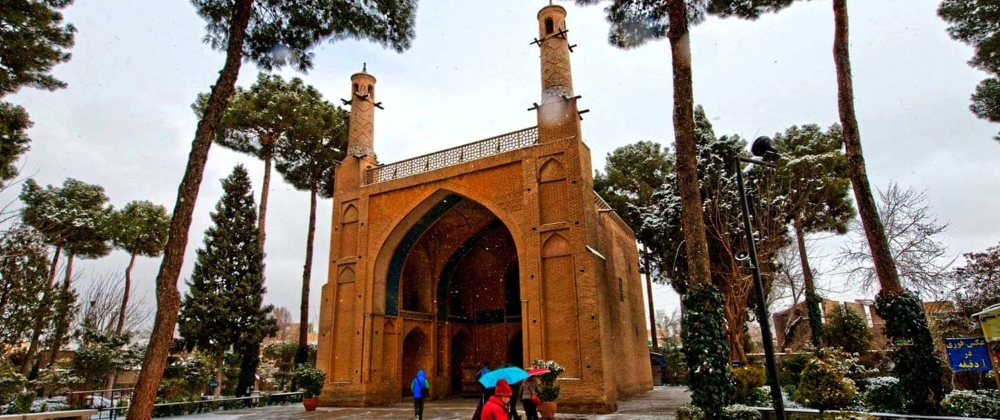
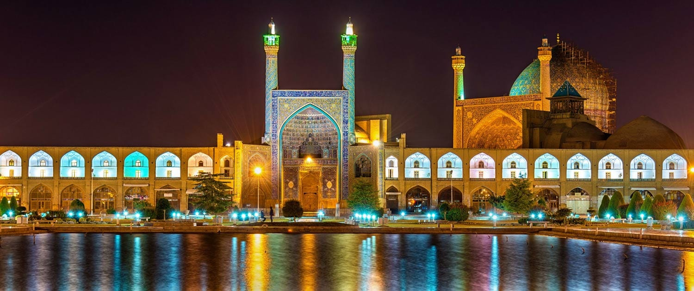
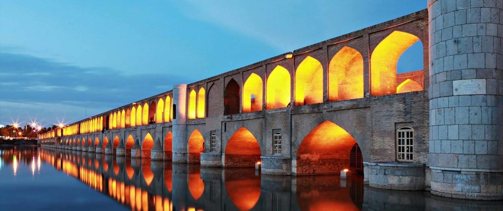

Wikipedia
Isfahan
This article is about the city of Isfahan.
Table of Contents
Historical Places
One of the most historical cities in Iran with numbers of magnificent and beautiful monuments to visit is Isfahan. Numerous palaces, bridges, mosques, and bazaars are the reasons why the city is included in every tourist itinerary when visiting Iran. Since there are lots of monuments to visit in the city, and considering limited time people have when traveling around Iran, we are introducing top 10 places to visit in Isfahan in this article.
In addition to the great heritage of the city, the people of Isfahan has a great taste, and you can find some of the best sweets, confectionery, and cuisine in the city. For instance, Khoresh Mast, and Beryani are the local food of the city, which rarely can be found in other cities. So, don’t forget to treat yourself with these delicious dishes when you are in Isfahan.
Here are some examples of these historical sites:
- Khaju Bridge
- Si-O-Se-Pol Bridge
- Naghshe Jahan Square
- Vank Cathedral
- Chehel Sotoun Palace
- Hasht Behesht Palace
- Menar Jonban
- Jame Mosque of Isfahan
Pictures
Menar Jonban 
The Menar Jonban (Shaking Minarets) constructed during Ilkhanid Dynasty, at the time of the late King Oljaitu to be used as a mausoleum for “Amu Abdullah” who was a mystic and ascetic in Ilkhanid era. According to archeological studies, it is believed that the minarets were added to the mausoleum later by the Safavid scientists. These minarets have unique structures since when one of the minarets is shaken, the other minaret will shake the same time as well.
Naqshe Jahan Square 
The magnificent Naqsh -e Jahan Square (Naqsh stands for Image and Jahan for the World), is located at the heart of the city. The complex along with a Bazaar, a Palace and two Mosques listed as UNESCO’s World Heritage Sites in 1979. Due to the great importance and beauty of the place, it is somehow impossible to find a cultural tour to Iran without a visit to this area.
Si-O-Se Pol Bridge 
The original name of this bridge was Allah-verdi Khan Bridge. However, it is more popular as Si-o-se-pol which is the largest bridge over the Zayanderud River. The bridge was built approximately four hundred years ago during the Safavid Dynasty.
Population
| Year | Population | Percent |
|---|---|---|
| 1870 | 60,000 | N/A |
| 1890 | 90,000 | +2.05% |
| 1900 | 100,000 | +1.06% |
| 1920 | 80,000 | −1.11% |
| 1933 | 100,100 | +1.74% |
| 1942 | 204,600 | +8.27% |
| 1956 | 254,700 | +1.58% |
| 1968 | 444,000 | +4.74% |
| 1976 | 671,800 | +5.31% |
| 1986 | 986,800 | +3.92% |
| 1991 | 1,182,735 | +3.69% |
| 1996 | 1,327,283 | +2.33% |
| 2001 | 1,327,283 | +0.00% |
| 2006 | 1,689,392 | +4.94% |
| 2011 | 1,853,293 | +1.87% |
| 2016 | 1,961,260 | +1.14% |